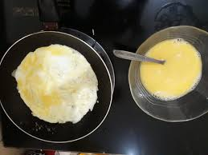
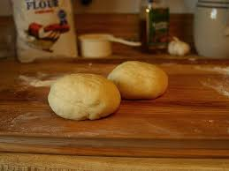
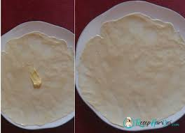

Resep Roti Maryam
Bahan-bahan
- 250 gr tepung terigu
- 1 butir telur
- 3 sdm margarin, lelehkan
- 100 ml air hangat
- 2 sdm susu bubuk (optional)
- 1/2 sdt garam
- margarin leleh untuk olesan
- minyak untuk merendam
Langkah-langkah
- Campur semua bahan roti jadi satu

- uleni sampai kalis memakai tangan, lumuri tangan menggunakan tepung agar tidak lengket, lalu uleni sampai adonan kalis

- kalisnya adonan canai tidak sekalis adonan roti, secukupnya
